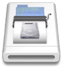

Normally when a disk image is mounted, it shows up on the desktop with a plain
white icon that looks like a hard drive. With this option checked, DropDMG will
customize the icon in one of two modes:
- Automatic
If the top level of the image contains an application, DropDMG will badge
the application’s icon onto the white drive icon. Or, if the disk image
contains a single file, DropDMG will badge that file’s icon onto the drive.
DropDMG renders an optimized version of the badged icon for each size up to
512×512.

- Manual
To choose your own graphic file to use as the icon:
- Click the Set Icon… button.
- Select the graphic file and click Choose.
- Select the source folder (the folder that you will drop onto DropDMG
when you create the disk image) and click Choose. DropDMG will
convert your graphic file into an invisible .VolumeIcon.icns in
the source folder.
- Now, whenever you create a disk image from that source folder
(provided that Custom volume icon is checked) DropDMG will use
the .icns file to set the volume icon.
DropDMG ignores the Custom volume icon option when creating a disk image by
converting.
Burning a CD or DVD-ROM With a Custom Icon
- Put the files that will comprise your disc into a folder (called the
source folder).
- In the Configurations preferences, set the Format to .cdr and
make sure that Custom volume icon is checked.
- If you want DropDMG to automatically create the icon based on the main
file in your source folder, skip this step. To use your own graphic file
for the icon, click the Set Icon… button. Select the graphic file and
click Choose. Then select the source folder and click Choose.
- Drag your source folder onto DropDMG’s icon in the Dock. This will create
a .cdr file.
- Choose Burn… from DropDMG’s File menu. Make sure that Burn
contents of disk images is checked. Then select the .cdr file and
burn your disc.
Creating a Sparse Disk Image With a Custom Icon
DropDMG currently does not support directly creating a .sparsebundle or
.sparseimage disk image with a custom icon. You can, however, create a
.dmg disk image with a custom icon and then convert it to the desired format.